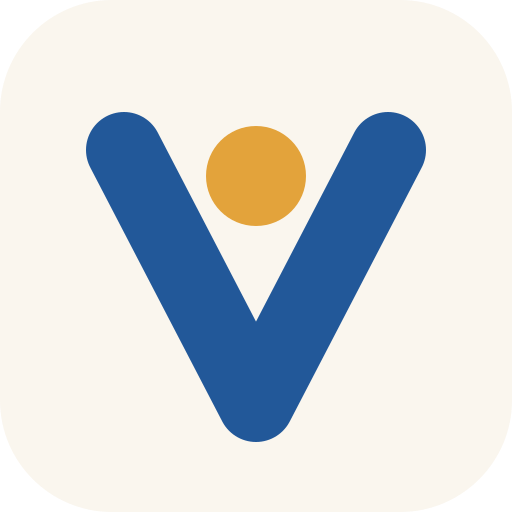

Privacy policy
Last updated October 24, 2026.
What Vessel OS reads from Google
If you connect your Google Calendar, Vessel OS reads the events on your calendars and adds, moves or removes the events it made from your own lists. It asks Google only for calendar access, nothing else in your Google account.
Where it goes
Your calendar data is stored only on your own computer, to show your events on its screen. It is not sent to us or to any server of ours, not sold, not shared with anyone, and not used for advertising. The Google sign-in Vessel keeps on your computer is used only to read and update your calendar. Vessel OS's use of information received from Google APIs adheres to the Google API Services User Data Policy, including the Limited Use requirements.
Claude
When you ask Claude on your Vessel about your schedule, the events it needs to answer are part of that conversation with Anthropic, under Anthropic's privacy policy.
Stopping it
Ask Vessel to disconnect your calendar: it stops all access and clears your Google events from your computer. You can also remove Vessel OS at myaccount.google.com/permissions, which stops all access at once.